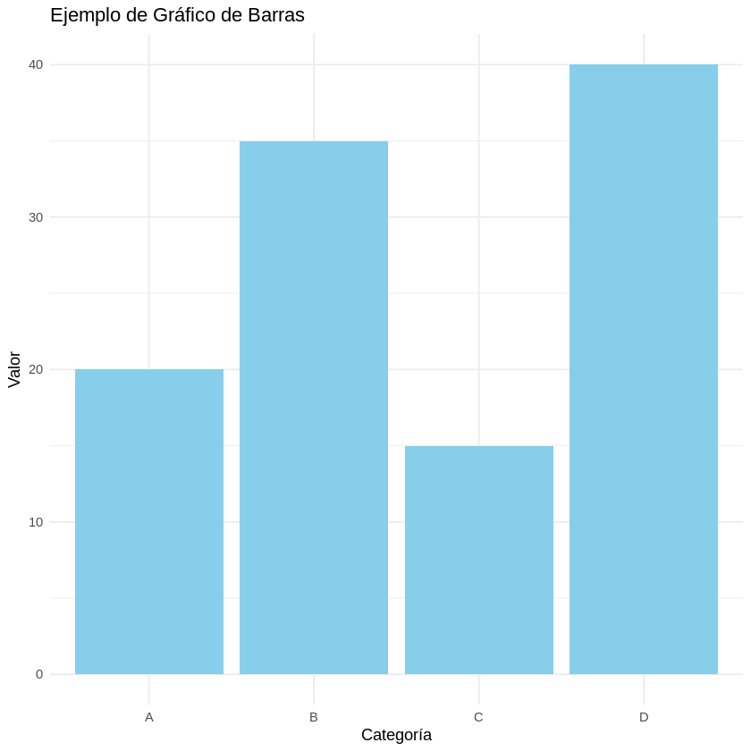

# Asignación de variables
mi_entero <- 10
mi_decimal = 3.14
mi_cadena <- "Hola, R"
mi_booleano <- TRUER en Google Colab

Para poder ejecutar código en R dentro de Google Colab, primero debe cambiar el entorno de ejecución. Diríjase al menú Runtime, seleccione Change runtime type y elija R como lenguaje antes de ejecutar las celdas del notebook.

1. Variables y Tipos de Datos Básicos
En R, puedes asignar valores a variables usando el operador <- o =. R es dinámicamente tipado, lo que significa que no necesitas declarar el tipo de dato de una variable explícitamente.
typeof(mi_entero)
typeof(mi_decimal)
'double'
'double'
# Imprimir variables y sus tipos
print(paste("Entero:", mi_entero, "Tipo:", typeof(mi_entero)))
print(paste("Decimal:", mi_decimal, "Tipo:", typeof(mi_decimal)))
print(paste("Cadena:", mi_cadena, "Tipo:", typeof(mi_cadena)))
print(paste("Booleano:", mi_booleano, "Tipo:", typeof(mi_booleano)))[1] "Entero: 10 Tipo: double"
[1] "Decimal: 3.14 Tipo: double"
[1] "Cadena: Hola, R Tipo: character"
[1] "Booleano: TRUE Tipo: logical"# Operaciones básicas
resultado_suma <- mi_entero + 5
resultado_multiplicacion <- mi_decimal * 2
print(paste("Suma:", resultado_suma))
print(paste("Multiplicación:", resultado_multiplicacion))[1] "Suma: 15"
[1] "Multiplicación: 6.28"2. Estructuras de Datos
R tiene varias estructuras de datos fundamentales para organizar información.
2.1. Vectores
Los vectores son las estructuras de datos más básicas en R. Son colecciones ordenadas de elementos del mismo tipo de dato.
# Crear un vector numérico
vector_numerico <- c(1, 2, 3, 4, 5)
print("Vector Numérico:")
print(vector_numerico)
# Crear un vector de caracteres
vector_caracteres <- c("manzana", "banana", "cereza")
print("Vector de Caracteres:")
print(vector_caracteres)
# Acceder a elementos de un vector (indexación base 1)
print(paste("Primer elemento:", vector_numerico[1]))
print(paste("Elementos 2 a 4:", paste(vector_numerico[2:4], collapse = ", ")))
# Operaciones con vectores
vector_suma <- vector_numerico + 10
print("Vector Suma:")
print(vector_suma)[1] "Vector Numérico:"
[1] 1 2 3 4 5
[1] "Vector de Caracteres:"
[1] "manzana" "banana" "cereza"
[1] "Primer elemento: 1"
[1] "Elementos 2 a 4: 2, 3, 4"
[1] "Vector Suma:"
[1] 11 12 13 14 152.2. Listas
Las listas son colecciones ordenadas de objetos, donde los objetos pueden ser de diferentes tipos de datos (incluso otras listas o data frames).
# Crear una lista
mi_lista <- list("nombre" = "Alice", "edad" = 30, "numeros" = c(1, 2, 3))
print("Mi Lista:")
print(mi_lista)
# Acceder a elementos de una lista
print(paste("Nombre:", mi_lista$nombre))
print(paste("Edad:", mi_lista[["edad"]]))
print("Números:")
print(mi_lista$numeros)[1] "Mi Lista:"
$nombre
[1] "Alice"
$edad
[1] 30
$numeros
[1] 1 2 3
[1] "Nombre: Alice"
[1] "Edad: 30"
[1] "Números:"
[1] 1 2 3print(“”
2.3. Matrices
Las matrices son colecciones bidimensionales de elementos del mismo tipo de dato. Son como tablas de datos con filas y columnas.
# Crear una matriz de 2x3
matriz_ejemplo <- matrix(c(1, 2, 3, 4, 5, 6), nrow = 2, ncol = 3, byrow = TRUE)
print("Matriz Ejemplo:")
print(matriz_ejemplo)
# Acceder a elementos de una matriz (fila, columna)
print(paste("Elemento (1,2):", matriz_ejemplo[1, 2]))
print("Primera fila:")
print(matriz_ejemplo[1, ])
print("Segunda columna:")
print(matriz_ejemplo[, 2])[1] "Matriz Ejemplo:"
[,1] [,2] [,3]
[1,] 1 2 3
[2,] 4 5 6
[1] "Elemento (1,2): 2"
[1] "Primera fila:"
[1] 1 2 3
[1] "Segunda columna:"
[1] 2 52.4. Data Frames
Los Data Frames son la estructura de datos más importante y utilizada en R para el análisis de datos. Son como hojas de cálculo o tablas de bases de datos, donde cada columna puede contener un tipo de dato diferente (pero todas las columnas tienen la misma longitud).
# Crear un Data Frame
datos_clientes <- data.frame(
ID = c(1, 2, 3),
Nombre = c("Ana", "Luis", "Marta"),
Edad = c(25, 30, 22),
Ciudad = c("Madrid", "Barcelona", "Valencia")
)
print("Data Frame Datos Clientes:")
print(datos_clientes)
# Acceder a columnas
print("Nombres:")
print(datos_clientes$Nombre)
print("Edad (con corchetes dobles):")
print(datos_clientes[["Edad"]])
# Acceder a filas
print("Primera fila:")
print(datos_clientes[1, ])
# Filtrar filas
print("Clientes mayores de 25 años:")
print(datos_clientes[datos_clientes$Edad > 25, ])[1] "Data Frame Datos Clientes:"
ID Nombre Edad Ciudad
1 1 Ana 25 Madrid
2 2 Luis 30 Barcelona
3 3 Marta 22 Valencia
[1] "Nombres:"
[1] "Ana" "Luis" "Marta"
[1] "Edad (con corchetes dobles):"
[1] 25 30 22
[1] "Primera fila:"
ID Nombre Edad Ciudad
1 1 Ana 25 Madrid
[1] "Clientes mayores de 25 años:"
ID Nombre Edad Ciudad
2 2 Luis 30 Barcelona3. Control de Flujo
El control de flujo te permite ejecutar diferentes bloques de código basándose en condiciones o repetir tareas.
3.1. if-else (Condicionales)
numero <- "hola"
if (numero > 10) {
print("El número es mayor que 10")
} else if (numero == 10) {
print("El número es igual a 10")
} else {
print("El número es menor que 10")
}[1] "El número es mayor que 10"3.2. Bucles for
frutas <- c("manzana", "plátano", "uva")
for (fruta in frutas) {
print(paste("Me gusta comer", fruta))
}
# Bucle for con un rango numérico
for (i in 1:5) {
print(paste("Contando:", i))
}[1] "Me gusta comer manzana"
[1] "Me gusta comer plátano"
[1] "Me gusta comer uva"
[1] "Contando: 1"
[1] "Contando: 2"
[1] "Contando: 3"
[1] "Contando: 4"
[1] "Contando: 5"3.3. Bucles while
i <- 1
while (i <= 3) {
print(paste("Iteración:", i))
i <- i + 1
}[1] "Iteración: 1"
[1] "Iteración: 2"
[1] "Iteración: 3"4. Funciones
Las funciones te permiten encapsular bloques de código para reutilizarlos. Son fundamentales para escribir código modular y legible.
# Definir una función simple
saludar <- function(nombre) {
mensaje <- paste("Hola,", nombre, "¡Bienvenido a R!")
return(mensaje)
}
# Llamar a la función
print(saludar("Carlos"))
print(saludar("María"))
# Función con múltiples argumentos y valor por defecto
calcular_area_rectangulo <- function(largo, ancho = 3) {
area <- largo * ancho
return(area)
}
print(paste("Área de un rectángulo 5x3:", calcular_area_rectangulo(5, 3)))
print(paste("Área de un rectángulo 7x1 (ancho por defecto):", calcular_area_rectangulo(7)))[1] "Hola, Carlos ¡Bienvenido a R!"
[1] "Hola, María ¡Bienvenido a R!"
[1] "Área de un rectángulo 5x3: 15"
[1] "Área de un rectángulo 7x1 (ancho por defecto): 21"5. Paquetes (Librerías)
R tiene un vasto ecosistema de paquetes que extienden su funcionalidad. Para usarlos, primero debes instalarlos y luego cargarlos.
5.1. dplyr para Manipulación de Datos
dplyr es parte del tidyverse y es excelente para la manipulación de Data Frames.
# Instalar dplyr (solo si no lo tienes instalado)
# install.packages("dplyr")
# Cargar dplyr
library(dplyr)
# Crear un Data Frame de ejemplo
df_ventas <- data.frame(
Producto = c("A", "B", "A", "C", "B", ""),
Region = c("Norte", "Sur", "Norte", "Este", "Oeste", "Norte"),
Ventas = c(100, 150, 120, 80, 200, 90)
)
print("Data Frame original:")
print(df_ventas)[1] "Data Frame original:"
Producto Region Ventas
1 A Norte 100
2 B Sur 150
3 A Norte 120
4 C Este 80
5 B Oeste 200
6 Norte 90# Filtrar (filter()): Ventas mayores a 100
print("Ventas > 100:")
filter(df_ventas, Ventas > 100)[1] "Ventas > 100:"| Producto | Region | Ventas |
|---|---|---|
| <chr> | <chr> | <dbl> |
| B | Sur | 150 |
| A | Norte | 120 |
| B | Oeste | 200 |
# Seleccionar (select()): Solo Producto y Ventas
print("Solo Producto y Ventas:")
print(select(df_ventas, Producto, Ventas))
# Agrupar y resumir (group_by(), summarise()): Suma de ventas por producto
print("Suma de Ventas por Producto:")
print(df_ventas %>%
group_by(Producto) %>%
summarise(Total_Ventas = sum(Ventas)))[1] "Data Frame original:" Producto Region Ventas 1 A Norte 100 2 B Sur 150 3 A Norte 120 4 C Este 80 5 B Oeste 200 6 C Norte 90 [1] "Ventas > 100:" Producto Region Ventas 1 B Sur 150 2 A Norte 120 3 B Oeste 200 [1] "Solo Producto y Ventas:" Producto Ventas 1 A 100 2 B 150 3 A 120 4 C 80 5 B 200 6 C 90 [1] "Suma de Ventas por Producto:" # A tibble: 3 × 2 Producto Total_Ventas <chr> <dbl> 1 A 220 2 B 350 3 C 170
5.2. ggplot2 para Visualización de Datos
ggplot2 también es parte del tidyverse y es una de las librerías más potentes para crear gráficos en R.
# Instalar ggplot2 (solo si no lo tienes instalado)
# install.packages("ggplot2")
# Cargar ggplot2
library(ggplot2)
# Crear datos de ejemplo
datos_grafico <- data.frame(
Categoria = c("A", "B", "C", "D"),
Valor = c(20, 35, 15, 40)
)
# Crear un gráfico de barras simple
mi_grafico <- ggplot(datos_grafico, aes(x = Categoria, y = Valor)) +
geom_bar(stat = "identity", fill = "skyblue") +
labs(title = "Ejemplo de Gráfico de Barras",
x = "Categoría",
y = "Valor") +
theme_minimal()
print(mi_grafico)
Conclusión
En este cuaderno revisamos los principales fundamentos de R para comenzar a trabajar con el lenguaje. Partimos configurando R en Google Colab y luego exploramos conceptos esenciales como variables, tipos de datos y las estructuras de datos más utilizadas, incluyendo vectores, listas, matrices y data frames.
También vimos cómo controlar el flujo de un programa utilizando estructuras como if-else, for y while, además de cómo definir y utilizar funciones. Finalmente, se presentó una breve introducción a paquetes muy utilizados en el ecosistema de R, como dplyr para la manipulación de datos y ggplot2 para su visualización.
La idea es que este material sirva como una base o repaso para entender los conceptos fundamentales de R y poder seguir profundizando en el análisis de datos con este lenguaje.